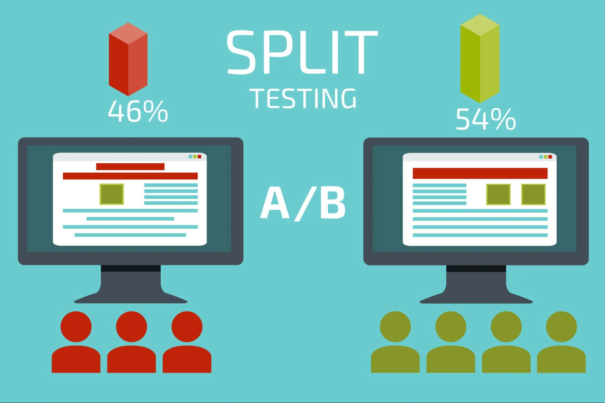

Thể Loại
Gia Công Phần Mềm
- 6
Marketing
- 3
Other
- 0
Tags
Website
Mobile
Design
Branding
Marketing
Latest posts

Split Testing - Nâng Cao Chiến Lược Quảng Cáo Facebook
Posted by Trang Nguyễn
Tầm quan trọng của Content Marketing trong Chiến Dịch Truyền Thông Của Doanh Nghiệp
Posted by Trang Nguyễn
5 Trang (Pages) Phổ Biến Được Đề Xuất Mà Một Website Nên Có.
Posted by Tài Nguyễn
Quảng Cáo Mạng Xã Hội (Social Ads): Kết Nối Hiệu Quả, Đạt Tới Đối Tượng Mục Tiêu!
Posted by Trang Nguyễn
5 Lý Do Tại Sao Việc Thuê Gia Công Phần Mềm Có Thể Mang Lại Lợi Ích Cho Doanh Nghiệp Của Bạn.
Posted by Tài Nguyễn